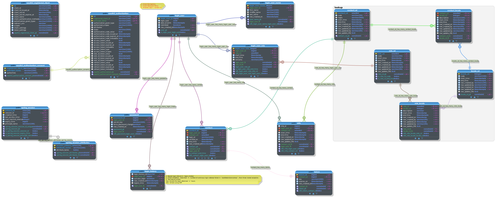

Database
Data Model

Data dictionary
SQL
-- Database generated with pgModeler (PostgreSQL Database Modeler).
-- pgModeler version: 1.0.1
-- PostgreSQL version: 15.0
-- Project Site: pgmodeler.io
-- Model Author: ---
-- Database creation must be performed outside a multi lined SQL file.
-- These commands were put in this file only as a convenience.
--
-- object: authorization1 | type: DATABASE --
-- DROP DATABASE IF EXISTS authorization1;
CREATE DATABASE authorization1;
-- ddl-end --
COMMENT ON DATABASE authorization1 IS E'Created Thirumal';
-- ddl-end --
-- object: lookup | type: SCHEMA --
-- DROP SCHEMA IF EXISTS lookup CASCADE;
CREATE SCHEMA lookup;
-- ddl-end --
ALTER SCHEMA lookup OWNER TO postgres;
-- ddl-end --
SET search_path TO pg_catalog,public,lookup;
-- ddl-end --
-- object: "uuid-ossp" | type: EXTENSION --
-- DROP EXTENSION IF EXISTS "uuid-ossp" CASCADE;
CREATE EXTENSION "uuid-ossp"
WITH SCHEMA public;
-- ddl-end --
-- object: public.oauth2_authorization | type: TABLE --
-- DROP TABLE IF EXISTS public.oauth2_authorization CASCADE;
CREATE TABLE public.oauth2_authorization (
id varchar(100) NOT NULL,
registered_client_id varchar(100) NOT NULL,
principal_name varchar(200) NOT NULL,
authorization_grant_type varchar(100) NOT NULL,
authorized_scopes varchar(1000),
attributes text,
state varchar(500),
authorization_code_value text,
authorization_code_issued_at timestamptz,
authorization_code_expires_at timestamptz,
authorization_code_metadata text,
access_token_value text,
access_token_issued_at timestamptz,
access_token_expires_at timestamptz,
access_token_metadata text,
access_token_type varchar(100),
access_token_scopes varchar(1000),
oidc_id_token_value text,
oidc_id_token_issued_at timestamptz,
oidc_id_token_expires_at timestamptz,
oidc_id_token_metadata text,
refresh_token_value text,
refresh_token_issued_at timestamptz,
refresh_token_expires_at timestamptz,
refresh_token_metadata text,
CONSTRAINT oauth2_authorization_pk PRIMARY KEY (id,registered_client_id,principal_name)
);
-- ddl-end --
ALTER TABLE public.oauth2_authorization OWNER TO postgres;
-- ddl-end --
-- object: public.oauth2_authorization_consent | type: TABLE --
-- DROP TABLE IF EXISTS public.oauth2_authorization_consent CASCADE;
CREATE TABLE public.oauth2_authorization_consent (
registered_client_id varchar(100) NOT NULL,
principal_name varchar(200) NOT NULL,
authorities varchar(1000) NOT NULL,
CONSTRAINT oauth2_authorization_consent_pk PRIMARY KEY (registered_client_id,principal_name)
);
-- ddl-end --
ALTER TABLE public.oauth2_authorization_consent OWNER TO postgres;
-- ddl-end --
INSERT INTO public.oauth2_authorization_consent (registered_client_id, principal_name, authorities) VALUES (E'Thirumal', E'admin', E'SCOPE_read,user');
-- ddl-end --
-- object: oauth2_authorization_consent_fk | type: CONSTRAINT --
-- ALTER TABLE public.oauth2_authorization DROP CONSTRAINT IF EXISTS oauth2_authorization_consent_fk CASCADE;
ALTER TABLE public.oauth2_authorization ADD CONSTRAINT oauth2_authorization_consent_fk FOREIGN KEY (registered_client_id,principal_name)
REFERENCES public.oauth2_authorization_consent (registered_client_id,principal_name) MATCH FULL
ON DELETE CASCADE ON UPDATE CASCADE;
-- ddl-end --
-- object: public.oauth2_registered_client | type: TABLE --
-- DROP TABLE IF EXISTS public.oauth2_registered_client CASCADE;
CREATE TABLE public.oauth2_registered_client (
id varchar(100) NOT NULL,
client_id varchar(100) NOT NULL,
client_id_issued_at timestamp NOT NULL DEFAULT CURRENT_TIMESTAMP,
client_secret varchar(200),
client_secret_expires_at timestamp,
client_name varchar(200) NOT NULL,
client_authentication_methods varchar(1000) NOT NULL,
authorization_grant_types varchar(1000) NOT NULL,
redirect_uris varchar,
scopes varchar(1000) NOT NULL,
client_settings varchar(2000) NOT NULL,
token_settings varchar(2000) NOT NULL,
CONSTRAINT oauth2_registered_client_pk PRIMARY KEY (id)
);
-- ddl-end --
ALTER TABLE public.oauth2_registered_client OWNER TO postgres;
-- ddl-end --
INSERT INTO public.oauth2_registered_client (id, client_id, client_id_issued_at, client_secret, client_secret_expires_at, client_name, client_authentication_methods, authorization_grant_types, redirect_uris, scopes, client_settings, token_settings) VALUES (E'Thirumal', E'1', DEFAULT, E'$2a$10$M0D7JM8IErxNfdNCRccHgOR3ImXzr/nV5NQO1kRZZCIaaDM.YhA5e', DEFAULT, E'Thirumal', E'client_secret_basic,client_secret_post', E'refresh_token,client_credentials,authorization_code', E'http://127.0.0.1:8000/authorized,http://127.0.0.1:8000/login/oauth2/code/users-client-oidc', E'read,openid,profile', E'{"@class":"java.util.Collections$UnmodifiableMap","settings.client.require-proof-key":false,"settings.client.require-authorization-consent":true}', E'{"@class":"java.util.Collections$UnmodifiableMap","settings.token.reuse-refresh-tokens":true,"settings.token.id-token-signature-algorithm":["org.springframework.security.oauth2.jose.jws.SignatureAlgorithm","RS256"],"settings.token.access-token-time-to-live":["java.time.Duration",3000.000000000],"settings.token.access-token-format":{"@class":"org.springframework.security.oauth2.server.authorization.settings.OAuth2TokenFormat","value":"self-contained"},"settings.token.refresh-token-time-to-live":["java.time.Duration",3600.000000000],"settings.token.authorization-code-time-to-live":["java.time.Duration",300.000000000]}');
-- ddl-end --
INSERT INTO public.oauth2_registered_client (id, client_id, client_id_issued_at, client_secret, client_secret_expires_at, client_name, client_authentication_methods, authorization_grant_types, redirect_uris, scopes, client_settings, token_settings) VALUES (E'E-Auction', E'2', DEFAULT, E'$2a$10$M0D7JM8IErxNfdNCRccHgOR3ImXzr/nV5NQO1kRZZCIaaDM.YhA5e', DEFAULT, E'E-Auction', E'client_secret_basic,client_secret_post', E'refresh_token,client_credentials,authorization_code', E'http://127.0.0.1:8000/authorized,http://127.0.0.1:8000/login/oauth2/code/users-client-oidc', E'read,openid,profile', E'{"@class":"java.util.Collections$UnmodifiableMap","settings.client.require-proof-key":false,"settings.client.require-authorization-consent":true}', E'{"@class":"java.util.Collections$UnmodifiableMap","settings.token.reuse-refresh-tokens":true,"settings.token.id-token-signature-algorithm":["org.springframework.security.oauth2.jose.jws.SignatureAlgorithm","RS256"],"settings.token.access-token-time-to-live":["java.time.Duration",3000.000000000],"settings.token.access-token-format":{"@class":"org.springframework.security.oauth2.server.authorization.settings.OAuth2TokenFormat","value":"self-contained"},"settings.token.refresh-token-time-to-live":["java.time.Duration",3600.000000000],"settings.token.authorization-code-time-to-live":["java.time.Duration",300.000000000]}');
-- ddl-end --
-- object: public.login_user_name_login_user_name_id_seq | type: SEQUENCE --
-- DROP SEQUENCE IF EXISTS public.login_user_name_login_user_name_id_seq CASCADE;
CREATE SEQUENCE public.login_user_name_login_user_name_id_seq
INCREMENT BY 1
MINVALUE -9223372036854775808
MAXVALUE 9223372036854775807
START WITH 1
CACHE 1
NO CYCLE
OWNED BY NONE;
-- ddl-end --
-- object: public.contact_contact_id_seq | type: SEQUENCE --
-- DROP SEQUENCE IF EXISTS public.contact_contact_id_seq CASCADE;
CREATE SEQUENCE public.contact_contact_id_seq
INCREMENT BY 1
MINVALUE -9223372036854775808
MAXVALUE 9223372036854775807
START WITH 1
CACHE 1
NO CYCLE
OWNED BY NONE;
-- ddl-end --
-- object: lookup.contact_cd_contact_cd_seq | type: SEQUENCE --
-- DROP SEQUENCE IF EXISTS lookup.contact_cd_contact_cd_seq CASCADE;
CREATE SEQUENCE lookup.contact_cd_contact_cd_seq
INCREMENT BY 1
MINVALUE -32768
MAXVALUE 32767
START WITH 1
CACHE 1
NO CYCLE
OWNED BY NONE;
-- ddl-end --
-- object: lookup.contact_locale | type: TABLE --
-- DROP TABLE IF EXISTS lookup.contact_locale CASCADE;
CREATE TABLE lookup.contact_locale (
contact_cd smallint NOT NULL,
locale_cd integer NOT NULL,
description varchar(100) NOT NULL,
start_time timestamptz NOT NULL DEFAULT CURRENT_TIMESTAMP,
end_time timestamptz NOT NULL DEFAULT 'infinity'::timestamp,
row_created_on timestamptz NOT NULL DEFAULT current_timestamp,
row_created_by varchar(50) NOT NULL DEFAULT 'Thirumal',
row_updated_on timestamptz NOT NULL DEFAULT current_timestamp,
row_updated_by varchar(50) NOT NULL DEFAULT 'Thirumal',
row_update_info text
);
-- ddl-end --
ALTER TABLE lookup.contact_locale OWNER TO postgres;
-- ddl-end --
INSERT INTO lookup.contact_locale (contact_cd, locale_cd, description, start_time, end_time, row_created_on, row_created_by, row_updated_on, row_updated_by, row_update_info) VALUES (E'1', E'1', E'E-Mail', DEFAULT, DEFAULT, DEFAULT, DEFAULT, DEFAULT, DEFAULT, DEFAULT);
-- ddl-end --
INSERT INTO lookup.contact_locale (contact_cd, locale_cd, description, start_time, end_time, row_created_on, row_created_by, row_updated_on, row_updated_by, row_update_info) VALUES (E'2', E'1', E'Phone Number', DEFAULT, DEFAULT, DEFAULT, DEFAULT, DEFAULT, DEFAULT, DEFAULT);
-- ddl-end --
-- object: public.login_user_login_user_id_seq | type: SEQUENCE --
-- DROP SEQUENCE IF EXISTS public.login_user_login_user_id_seq CASCADE;
CREATE SEQUENCE public.login_user_login_user_id_seq
INCREMENT BY 1
MINVALUE -9223372036854775808
MAXVALUE 9223372036854775807
START WITH 1
CACHE 1
NO CYCLE
OWNED BY NONE;
-- ddl-end --
-- object: public.contact | type: TABLE --
-- DROP TABLE IF EXISTS public.contact CASCADE;
CREATE TABLE public.contact (
contact_id bigint NOT NULL DEFAULT nextval('public.contact_contact_id_seq'::regclass),
login_user_id bigint NOT NULL,
contact_cd smallint NOT NULL,
login_id varchar(200) NOT NULL,
verified_on timestamptz,
end_time timestamp NOT NULL DEFAULT 'infinity'::timestamp,
row_created_on timestamptz NOT NULL DEFAULT current_timestamp,
CONSTRAINT contact_pk PRIMARY KEY (contact_id)
);
-- ddl-end --
ALTER TABLE public.contact OWNER TO postgres;
-- ddl-end --
-- object: public.login_user | type: TABLE --
-- DROP TABLE IF EXISTS public.login_user CASCADE;
CREATE TABLE public.login_user (
login_user_id bigint NOT NULL DEFAULT nextval('public.login_user_login_user_id_seq'::regclass),
login_uuid uuid NOT NULL DEFAULT uuid_generate_v4(),
date_of_birth timestamptz,
individual boolean NOT NULL DEFAULT true,
row_created_on timestamptz NOT NULL DEFAULT CURRENT_TIMESTAMP,
CONSTRAINT user_pk PRIMARY KEY (login_user_id)
);
-- ddl-end --
ALTER TABLE public.login_user OWNER TO postgres;
-- ddl-end --
-- object: public.login_user_name | type: TABLE --
-- DROP TABLE IF EXISTS public.login_user_name CASCADE;
CREATE TABLE public.login_user_name (
login_user_name_id bigint NOT NULL DEFAULT nextval('public.login_user_name_login_user_name_id_seq'::regclass),
login_user_id bigint NOT NULL,
first_name varchar(200) NOT NULL,
middle_name varchar(100),
last_name varchar(200),
row_created_on timestamptz NOT NULL DEFAULT CURRENT_TIMESTAMP,
CONSTRAINT user_name_pk PRIMARY KEY (login_user_name_id)
);
-- ddl-end --
ALTER TABLE public.login_user_name OWNER TO postgres;
-- ddl-end --
-- object: lookup.contact_cd | type: TABLE --
-- DROP TABLE IF EXISTS lookup.contact_cd CASCADE;
CREATE TABLE lookup.contact_cd (
contact_cd smallint NOT NULL DEFAULT nextval('lookup.contact_cd_contact_cd_seq'::regclass),
code varchar(50) NOT NULL,
regex varchar(500),
start_time timestamp NOT NULL DEFAULT CURRENT_TIMESTAMP,
end_time timestamp NOT NULL DEFAULT 'infinity'::TIMESTAMP,
row_created_on timestamptz NOT NULL DEFAULT CURRENT_TIMESTAMP,
row_created_by varchar(50) NOT NULL DEFAULT 'Thirumal',
row_updated_on timestamptz NOT NULL DEFAULT 'infinity'::timestamp,
row_updated_by varchar(50) NOT NULL DEFAULT 'Thirumal',
row_update_info text,
CONSTRAINT contact_cd_pk PRIMARY KEY (contact_cd)
);
-- ddl-end --
COMMENT ON COLUMN lookup.contact_cd.regex IS E'REGEX to Validate';
-- ddl-end --
ALTER TABLE lookup.contact_cd OWNER TO postgres;
-- ddl-end --
INSERT INTO lookup.contact_cd (contact_cd, code, regex, start_time, end_time, row_created_on, row_created_by, row_updated_on, row_updated_by, row_update_info) VALUES (E'1', E'E-Mail', E'^[a-zA-Z0-9_!#$%&''*+/=?`{|}~^.-]+@[a-zA-Z0-9.-]+$', DEFAULT, DEFAULT, DEFAULT, DEFAULT, DEFAULT, DEFAULT, DEFAULT);
-- ddl-end --
INSERT INTO lookup.contact_cd (contact_cd, code, regex, start_time, end_time, row_created_on, row_created_by, row_updated_on, row_updated_by, row_update_info) VALUES (E'2', E'Phone Number', E'^\+[1-9]{1}[0-9]{3,14}$', DEFAULT, DEFAULT, DEFAULT, DEFAULT, DEFAULT, DEFAULT, DEFAULT);
-- ddl-end --
-- object: lookup.locale_cd_locale_cd_seq | type: SEQUENCE --
-- DROP SEQUENCE IF EXISTS lookup.locale_cd_locale_cd_seq CASCADE;
CREATE SEQUENCE lookup.locale_cd_locale_cd_seq
INCREMENT BY 1
MINVALUE -2147483648
MAXVALUE 2147483647
START WITH 1
CACHE 1
NO CYCLE
OWNED BY NONE;
-- ddl-end --
-- object: lookup.locale_cd | type: TABLE --
-- DROP TABLE IF EXISTS lookup.locale_cd CASCADE;
CREATE TABLE lookup.locale_cd (
locale_cd integer NOT NULL DEFAULT nextval('lookup.locale_cd_locale_cd_seq'::regclass),
code varchar(100) NOT NULL,
start_time timestamptz NOT NULL DEFAULT current_timestamp,
end_time timestamptz NOT NULL DEFAULT 'infinity'::timestamp,
row_created_by varchar(100) NOT NULL DEFAULT 'Thirumal',
row_updated_by varchar(100) NOT NULL DEFAULT 'Thirumal',
row_created_on timestamptz NOT NULL DEFAULT current_timestamp,
row_updated_on timestamptz NOT NULL DEFAULT current_timestamp,
row_update_info text,
CONSTRAINT locale_cd_pk PRIMARY KEY (locale_cd)
);
-- ddl-end --
ALTER TABLE lookup.locale_cd OWNER TO postgres;
-- ddl-end --
INSERT INTO lookup.locale_cd (locale_cd, code, start_time, end_time, row_created_by, row_updated_by, row_created_on, row_updated_on, row_update_info) VALUES (E'1', E'en_IN', DEFAULT, DEFAULT, DEFAULT, DEFAULT, DEFAULT, DEFAULT, DEFAULT);
-- ddl-end --
INSERT INTO lookup.locale_cd (locale_cd, code, start_time, end_time, row_created_by, row_updated_by, row_created_on, row_updated_on, row_update_info) VALUES (E'2', E'ta_IN', DEFAULT, DEFAULT, DEFAULT, DEFAULT, DEFAULT, DEFAULT, DEFAULT);
-- ddl-end --
-- object: contact_cd_fk | type: CONSTRAINT --
-- ALTER TABLE lookup.contact_locale DROP CONSTRAINT IF EXISTS contact_cd_fk CASCADE;
ALTER TABLE lookup.contact_locale ADD CONSTRAINT contact_cd_fk FOREIGN KEY (contact_cd)
REFERENCES lookup.contact_cd (contact_cd) MATCH FULL
ON DELETE RESTRICT ON UPDATE CASCADE;
-- ddl-end --
-- object: locale_cd_fk | type: CONSTRAINT --
-- ALTER TABLE lookup.contact_locale DROP CONSTRAINT IF EXISTS locale_cd_fk CASCADE;
ALTER TABLE lookup.contact_locale ADD CONSTRAINT locale_cd_fk FOREIGN KEY (locale_cd)
REFERENCES lookup.locale_cd (locale_cd) MATCH FULL
ON DELETE RESTRICT ON UPDATE CASCADE;
-- ddl-end --
-- object: contact_cd_fk | type: CONSTRAINT --
-- ALTER TABLE public.contact DROP CONSTRAINT IF EXISTS contact_cd_fk CASCADE;
ALTER TABLE public.contact ADD CONSTRAINT contact_cd_fk FOREIGN KEY (contact_cd)
REFERENCES lookup.contact_cd (contact_cd) MATCH FULL
ON DELETE RESTRICT ON UPDATE CASCADE;
-- ddl-end --
-- object: public.password_password_id_seq | type: SEQUENCE --
-- DROP SEQUENCE IF EXISTS public.password_password_id_seq CASCADE;
CREATE SEQUENCE public.password_password_id_seq
INCREMENT BY 1
MINVALUE -9223372036854775808
MAXVALUE 9223372036854775807
START WITH 1
CACHE 1
NO CYCLE
OWNED BY NONE;
-- ddl-end --
-- object: public.password | type: TABLE --
-- DROP TABLE IF EXISTS public.password CASCADE;
CREATE TABLE public.password (
password_id bigint NOT NULL DEFAULT nextval('public.password_password_id_seq'::regclass),
login_user_id bigint NOT NULL,
secret_key varchar(300) NOT NULL,
force_password_change boolean NOT NULL DEFAULT false,
row_created_on timestamptz NOT NULL DEFAULT current_timestamp,
CONSTRAINT password_pk PRIMARY KEY (password_id)
);
-- ddl-end --
ALTER TABLE public.password OWNER TO postgres;
-- ddl-end --
-- object: public.login_history | type: TABLE --
-- DROP TABLE IF EXISTS public.login_history CASCADE;
CREATE TABLE public.login_history (
login_history_id bigserial NOT NULL,
login_user_id bigint NOT NULL,
success_login boolean NOT NULL,
row_created_on timestamptz NOT NULL DEFAULT current_timestamp,
logout_time timestamptz
);
-- ddl-end --
COMMENT ON TABLE public.login_history IS E'Limit Login Attempt.\n1. Record login failure in `login_history`\n2. Check wheather, more than `n` number of continous login attempt failed in `UserDetailsServiceImpl`, then throw locked exception.\n3. Two way to unlock.\n3(a). UnLock the login after/next `n` hours\n3(b). Unlock using OTP';
-- ddl-end --
COMMENT ON COLUMN public.login_history.success_login IS E'The login is success';
-- ddl-end --
COMMENT ON COLUMN public.login_history.row_created_on IS E'login time';
-- ddl-end --
ALTER TABLE public.login_history OWNER TO postgres;
-- ddl-end --
-- object: login_user_fk | type: CONSTRAINT --
-- ALTER TABLE public.password DROP CONSTRAINT IF EXISTS login_user_fk CASCADE;
ALTER TABLE public.password ADD CONSTRAINT login_user_fk FOREIGN KEY (login_user_id)
REFERENCES public.login_user (login_user_id) MATCH FULL
ON DELETE CASCADE ON UPDATE CASCADE;
-- ddl-end --
-- object: login_user_fk | type: CONSTRAINT --
-- ALTER TABLE public.contact DROP CONSTRAINT IF EXISTS login_user_fk CASCADE;
ALTER TABLE public.contact ADD CONSTRAINT login_user_fk FOREIGN KEY (login_user_id)
REFERENCES public.login_user (login_user_id) MATCH FULL
ON DELETE CASCADE ON UPDATE CASCADE;
-- ddl-end --
-- object: btree_gist | type: EXTENSION --
-- DROP EXTENSION IF EXISTS btree_gist CASCADE;
CREATE EXTENSION btree_gist
WITH SCHEMA public;
-- ddl-end --
-- object: login_user_fk | type: CONSTRAINT --
-- ALTER TABLE public.login_history DROP CONSTRAINT IF EXISTS login_user_fk CASCADE;
ALTER TABLE public.login_history ADD CONSTRAINT login_user_fk FOREIGN KEY (login_user_id)
REFERENCES public.login_user (login_user_id) MATCH FULL
ON DELETE CASCADE ON UPDATE CASCADE;
-- ddl-end --
-- object: login_user_fk | type: CONSTRAINT --
-- ALTER TABLE public.login_user_name DROP CONSTRAINT IF EXISTS login_user_fk CASCADE;
ALTER TABLE public.login_user_name ADD CONSTRAINT login_user_fk FOREIGN KEY (login_user_id)
REFERENCES public.login_user (login_user_id) MATCH FULL
ON DELETE CASCADE ON UPDATE CASCADE;
-- ddl-end --
-- object: public.token_token_id_seq | type: SEQUENCE --
-- DROP SEQUENCE IF EXISTS public.token_token_id_seq CASCADE;
CREATE SEQUENCE public.token_token_id_seq
INCREMENT BY 1
MINVALUE -9223372036854775808
MAXVALUE 9223372036854775807
START WITH 1
CACHE 1
NO CYCLE
OWNED BY NONE;
-- ddl-end --
-- object: public.token | type: TABLE --
-- DROP TABLE IF EXISTS public.token CASCADE;
CREATE TABLE public.token (
token_id bigint NOT NULL DEFAULT nextval('public.token_token_id_seq'::regclass),
contact_id bigint NOT NULL,
otp varchar(200) NOT NULL,
expires_on timestamptz NOT NULL,
row_created_on timestamptz NOT NULL DEFAULT current_timestamp,
CONSTRAINT token_pk PRIMARY KEY (token_id)
);
-- ddl-end --
ALTER TABLE public.token OWNER TO postgres;
-- ddl-end --
-- object: contact_fk | type: CONSTRAINT --
-- ALTER TABLE public.token DROP CONSTRAINT IF EXISTS contact_fk CASCADE;
ALTER TABLE public.token ADD CONSTRAINT contact_fk FOREIGN KEY (contact_id)
REFERENCES public.contact (contact_id) MATCH FULL
ON DELETE CASCADE ON UPDATE CASCADE;
-- ddl-end --
-- object: ixfk_token_contact_id | type: INDEX --
-- DROP INDEX IF EXISTS public.ixfk_token_contact_id CASCADE;
CREATE INDEX ixfk_token_contact_id ON public.token
USING btree
(
contact_id DESC NULLS LAST
);
-- ddl-end --
-- object: ixfk_contact_login_user_id | type: INDEX --
-- DROP INDEX IF EXISTS public.ixfk_contact_login_user_id CASCADE;
CREATE INDEX ixfk_contact_login_user_id ON public.contact
USING btree
(
login_user_id DESC NULLS LAST
);
-- ddl-end --
-- object: ixfk_login_user_name_login_user_id | type: INDEX --
-- DROP INDEX IF EXISTS public.ixfk_login_user_name_login_user_id CASCADE;
CREATE INDEX ixfk_login_user_name_login_user_id ON public.login_user_name
USING btree
(
login_user_id DESC NULLS LAST
);
-- ddl-end --
-- object: ixfk_password_login_user_id | type: INDEX --
-- DROP INDEX IF EXISTS public.ixfk_password_login_user_id CASCADE;
CREATE INDEX ixfk_password_login_user_id ON public.password
USING btree
(
login_user_id DESC NULLS LAST
);
-- ddl-end --
-- object: ix_login_user_login_uuid | type: INDEX --
-- DROP INDEX IF EXISTS public.ix_login_user_login_uuid CASCADE;
CREATE INDEX ix_login_user_login_uuid ON public.login_user
USING btree
(
login_uuid
);
-- ddl-end --
-- object: public.mfa_mfa_id_seq | type: SEQUENCE --
-- DROP SEQUENCE IF EXISTS public.mfa_mfa_id_seq CASCADE;
CREATE SEQUENCE public.mfa_mfa_id_seq
INCREMENT BY 1
MINVALUE -9223372036854775808
MAXVALUE 9223372036854775807
START WITH 1
CACHE 1
NO CYCLE
OWNED BY NONE;
-- ddl-end --
-- object: public.mfa | type: TABLE --
-- DROP TABLE IF EXISTS public.mfa CASCADE;
CREATE TABLE public.mfa (
mfa_id bigint NOT NULL DEFAULT nextval('public.mfa_mfa_id_seq'::regclass),
login_user_id bigint NOT NULL,
contact_cd smallint NOT NULL,
start_time timestamptz,
end_time timestamptz NOT NULL DEFAULT 'infinity'::timestamp,
row_created_on timestamp NOT NULL DEFAULT current_timestamp,
row_updated_on timestamptz NOT NULL,
row_update_info text
);
-- ddl-end --
COMMENT ON TABLE public.mfa IS E'Multi-Factor Authentication (MFA)';
-- ddl-end --
ALTER TABLE public.mfa OWNER TO postgres;
-- ddl-end --
-- object: contact_cd_fk | type: CONSTRAINT --
-- ALTER TABLE public.mfa DROP CONSTRAINT IF EXISTS contact_cd_fk CASCADE;
ALTER TABLE public.mfa ADD CONSTRAINT contact_cd_fk FOREIGN KEY (contact_cd)
REFERENCES lookup.contact_cd (contact_cd) MATCH FULL
ON DELETE RESTRICT ON UPDATE CASCADE;
-- ddl-end --
-- object: login_user_fk | type: CONSTRAINT --
-- ALTER TABLE public.mfa DROP CONSTRAINT IF EXISTS login_user_fk CASCADE;
ALTER TABLE public.mfa ADD CONSTRAINT login_user_fk FOREIGN KEY (login_user_id)
REFERENCES public.login_user (login_user_id) MATCH FULL
ON DELETE CASCADE ON UPDATE CASCADE;
-- ddl-end --
-- object: ixfk_mfa_login_user_id | type: INDEX --
-- DROP INDEX IF EXISTS public.ixfk_mfa_login_user_id CASCADE;
CREATE INDEX ixfk_mfa_login_user_id ON public.mfa
USING btree
(
login_user_id
);
-- ddl-end --
-- object: ixfk_mfa_contact_cd | type: INDEX --
-- DROP INDEX IF EXISTS public.ixfk_mfa_contact_cd CASCADE;
CREATE INDEX ixfk_mfa_contact_cd ON public.mfa
USING btree
(
contact_cd
);
-- ddl-end --
-- object: ix_contact_end_time | type: INDEX --
-- DROP INDEX IF EXISTS public.ix_contact_end_time CASCADE;
CREATE INDEX ix_contact_end_time ON public.contact
USING btree
(
(end_time = 'infinity')
);
-- ddl-end --
-- object: lookup.role_cd | type: TABLE --
-- DROP TABLE IF EXISTS lookup.role_cd CASCADE;
CREATE TABLE lookup.role_cd (
role_cd smallint NOT NULL,
code varchar(50) NOT NULL,
start_time timestamp NOT NULL DEFAULT current_timestamp,
end_time timestamp NOT NULL DEFAULT 'infinity'::timestamp,
row_created_on timestamptz DEFAULT current_timestamp,
row_created_by varchar(50) NOT NULL DEFAULT 'Thirumal',
row_updated_on timestamptz NOT NULL DEFAULT current_timestamp,
row_updated_by varchar(50) NOT NULL DEFAULT 'Thirumal',
row_update_info text,
CONSTRAINT role_cd_pk PRIMARY KEY (role_cd)
);
-- ddl-end --
ALTER TABLE lookup.role_cd OWNER TO postgres;
-- ddl-end --
INSERT INTO lookup.role_cd (role_cd, code, start_time, end_time, row_created_on, row_created_by, row_updated_on, row_updated_by, row_update_info) VALUES (E'1', E'USER', DEFAULT, DEFAULT, DEFAULT, DEFAULT, DEFAULT, DEFAULT, DEFAULT);
-- ddl-end --
INSERT INTO lookup.role_cd (role_cd, code, start_time, end_time, row_created_on, row_created_by, row_updated_on, row_updated_by, row_update_info) VALUES (E'2', E'SUPPORT', DEFAULT, DEFAULT, DEFAULT, DEFAULT, DEFAULT, DEFAULT, DEFAULT);
-- ddl-end --
INSERT INTO lookup.role_cd (role_cd, code, start_time, end_time, row_created_on, row_created_by, row_updated_on, row_updated_by, row_update_info) VALUES (E'3', E'ADMIN', DEFAULT, DEFAULT, DEFAULT, DEFAULT, DEFAULT, DEFAULT, DEFAULT);
-- ddl-end --
-- object: lookup.role_locale | type: TABLE --
-- DROP TABLE IF EXISTS lookup.role_locale CASCADE;
CREATE TABLE lookup.role_locale (
role_cd smallint NOT NULL,
locale_cd integer NOT NULL,
description varchar NOT NULL DEFAULT 100,
start_time timestamp NOT NULL DEFAULT current_timestamp,
end_time timestamptz NOT NULL DEFAULT 'infinity'::timestamp,
row_created_on timestamp NOT NULL DEFAULT current_timestamp,
row_created_by varchar(50) NOT NULL DEFAULT 'Thirumal',
row_updated_on timestamp NOT NULL DEFAULT current_timestamp,
row_updated_by varchar(50) NOT NULL DEFAULT 'Thirumal',
row_update_info text
);
-- ddl-end --
ALTER TABLE lookup.role_locale OWNER TO postgres;
-- ddl-end --
INSERT INTO lookup.role_locale (role_cd, locale_cd, description, start_time, end_time, row_created_on, row_created_by, row_updated_on, row_updated_by, row_update_info) VALUES (E'1', E'1', E'USER', DEFAULT, DEFAULT, DEFAULT, DEFAULT, DEFAULT, DEFAULT, DEFAULT);
-- ddl-end --
INSERT INTO lookup.role_locale (role_cd, locale_cd, description, start_time, end_time, row_created_on, row_created_by, row_updated_on, row_updated_by, row_update_info) VALUES (E'2', E'1', E'SUPPORT', DEFAULT, DEFAULT, DEFAULT, DEFAULT, DEFAULT, DEFAULT, DEFAULT);
-- ddl-end --
INSERT INTO lookup.role_locale (role_cd, locale_cd, description, start_time, end_time, row_created_on, row_created_by, row_updated_on, row_updated_by, row_update_info) VALUES (E'3', E'1', E'ADMIN', DEFAULT, DEFAULT, DEFAULT, DEFAULT, DEFAULT, DEFAULT, DEFAULT);
-- ddl-end --
-- object: role_cd_fk | type: CONSTRAINT --
-- ALTER TABLE lookup.role_locale DROP CONSTRAINT IF EXISTS role_cd_fk CASCADE;
ALTER TABLE lookup.role_locale ADD CONSTRAINT role_cd_fk FOREIGN KEY (role_cd)
REFERENCES lookup.role_cd (role_cd) MATCH FULL
ON DELETE CASCADE ON UPDATE CASCADE;
-- ddl-end --
-- object: locale_cd_fk | type: CONSTRAINT --
-- ALTER TABLE lookup.role_locale DROP CONSTRAINT IF EXISTS locale_cd_fk CASCADE;
ALTER TABLE lookup.role_locale ADD CONSTRAINT locale_cd_fk FOREIGN KEY (locale_cd)
REFERENCES lookup.locale_cd (locale_cd) MATCH FULL
ON DELETE CASCADE ON UPDATE CASCADE;
-- ddl-end --
-- object: ixfk_role_locale_role_cd | type: INDEX --
-- DROP INDEX IF EXISTS lookup.ixfk_role_locale_role_cd CASCADE;
CREATE INDEX ixfk_role_locale_role_cd ON lookup.role_locale
USING btree
(
role_cd
);
-- ddl-end --
-- object: ixfk_role_locale_locale_cd | type: INDEX --
-- DROP INDEX IF EXISTS lookup.ixfk_role_locale_locale_cd CASCADE;
CREATE INDEX ixfk_role_locale_locale_cd ON lookup.role_locale
USING btree
(
locale_cd
);
-- ddl-end --
-- object: ix_role_cd_code | type: INDEX --
-- DROP INDEX IF EXISTS lookup.ix_role_cd_code CASCADE;
CREATE INDEX ix_role_cd_code ON lookup.role_cd
USING btree
(
code
);
-- ddl-end --
-- object: public.login_user_role_login_user_role_id_seq | type: SEQUENCE --
-- DROP SEQUENCE IF EXISTS public.login_user_role_login_user_role_id_seq CASCADE;
CREATE SEQUENCE public.login_user_role_login_user_role_id_seq
INCREMENT BY 1
MINVALUE -9223372036854775808
MAXVALUE 9223372036854775807
START WITH 1
CACHE 1
NO CYCLE
OWNED BY NONE;
-- ddl-end --
-- object: public.login_user_role | type: TABLE --
-- DROP TABLE IF EXISTS public.login_user_role CASCADE;
CREATE TABLE public.login_user_role (
login_user_role_id bigint NOT NULL DEFAULT nextval('public.login_user_role_login_user_role_id_seq'::regclass),
login_user_id bigint NOT NULL,
role_cd smallint NOT NULL,
start_time timestamp NOT NULL DEFAULT current_timestamp,
end_time timestamptz NOT NULL DEFAULT 'infinity'::timestamp,
remarks varchar(100),
CONSTRAINT login_user_role_pk PRIMARY KEY (login_user_role_id)
);
-- ddl-end --
ALTER TABLE public.login_user_role OWNER TO postgres;
-- ddl-end --
-- object: role_cd_fk | type: CONSTRAINT --
-- ALTER TABLE public.login_user_role DROP CONSTRAINT IF EXISTS role_cd_fk CASCADE;
ALTER TABLE public.login_user_role ADD CONSTRAINT role_cd_fk FOREIGN KEY (role_cd)
REFERENCES lookup.role_cd (role_cd) MATCH FULL
ON DELETE CASCADE ON UPDATE CASCADE;
-- ddl-end --
-- object: ix_role_cd_end_time | type: INDEX --
-- DROP INDEX IF EXISTS lookup.ix_role_cd_end_time CASCADE;
CREATE INDEX ix_role_cd_end_time ON lookup.role_cd
USING btree
(
(end_time='infinity')
);
-- ddl-end --
-- object: login_user_fk | type: CONSTRAINT --
-- ALTER TABLE public.login_user_role DROP CONSTRAINT IF EXISTS login_user_fk CASCADE;
ALTER TABLE public.login_user_role ADD CONSTRAINT login_user_fk FOREIGN KEY (login_user_id)
REFERENCES public.login_user (login_user_id) MATCH FULL
ON DELETE CASCADE ON UPDATE CASCADE;
-- ddl-end --
-- object: ix_login_user_role_end_time | type: INDEX --
-- DROP INDEX IF EXISTS public.ix_login_user_role_end_time CASCADE;
CREATE INDEX ix_login_user_role_end_time ON public.login_user_role
USING btree
(
(end_time='infinity')
);
-- ddl-end --
-- object: ixfk_login_user_role_role_cd | type: INDEX --
-- DROP INDEX IF EXISTS public.ixfk_login_user_role_role_cd CASCADE;
CREATE INDEX ixfk_login_user_role_role_cd ON public.login_user_role
USING btree
(
role_cd
);
-- ddl-end --
-- object: ixfk_login_user_role_login_user_id | type: INDEX --
-- DROP INDEX IF EXISTS public.ixfk_login_user_role_login_user_id CASCADE;
CREATE INDEX ixfk_login_user_role_login_user_id ON public.login_user_role
USING btree
(
login_user_id
);
-- ddl-end --
-- object: public.spring_session | type: TABLE --
-- DROP TABLE IF EXISTS public.spring_session CASCADE;
CREATE TABLE public.spring_session (
primary_id char(36) NOT NULL,
session_id char(36) NOT NULL,
creation_time bigint NOT NULL,
last_access_time bigint NOT NULL,
max_inactive_interval integer NOT NULL,
expiry_time bigint NOT NULL,
principal_name varchar(100),
CONSTRAINT spring_session_session_id_unique UNIQUE (session_id),
CONSTRAINT spring_session_pk PRIMARY KEY (primary_id)
);
-- ddl-end --
ALTER TABLE public.spring_session OWNER TO postgres;
-- ddl-end --
-- object: ix_spring_session_session_id | type: INDEX --
-- DROP INDEX IF EXISTS public.ix_spring_session_session_id CASCADE;
CREATE UNIQUE INDEX ix_spring_session_session_id ON public.spring_session
USING btree
(
session_id
);
-- ddl-end --
-- object: ix_spring_session_expiry_time | type: INDEX --
-- DROP INDEX IF EXISTS public.ix_spring_session_expiry_time CASCADE;
CREATE INDEX ix_spring_session_expiry_time ON public.spring_session
USING btree
(
expiry_time
);
-- ddl-end --
-- object: ix_spring_session_principal_name | type: INDEX --
-- DROP INDEX IF EXISTS public.ix_spring_session_principal_name CASCADE;
CREATE INDEX ix_spring_session_principal_name ON public.spring_session
USING btree
(
principal_name
);
-- ddl-end --
-- object: public.spring_session_attributes | type: TABLE --
-- DROP TABLE IF EXISTS public.spring_session_attributes CASCADE;
CREATE TABLE public.spring_session_attributes (
session_primary_id char(36) NOT NULL,
attribute_name varchar(200) NOT NULL,
attribute_bytes bytea NOT NULL,
CONSTRAINT spring_session_attributes_pk PRIMARY KEY (session_primary_id,attribute_name)
);
-- ddl-end --
ALTER TABLE public.spring_session_attributes OWNER TO postgres;
-- ddl-end --
-- object: spring_session_attributes_fk | type: CONSTRAINT --
-- ALTER TABLE public.spring_session_attributes DROP CONSTRAINT IF EXISTS spring_session_attributes_fk CASCADE;
ALTER TABLE public.spring_session_attributes ADD CONSTRAINT spring_session_attributes_fk FOREIGN KEY (session_primary_id)
REFERENCES public.spring_session (primary_id) MATCH SIMPLE
ON DELETE CASCADE ON UPDATE NO ACTION;
-- ddl-end --